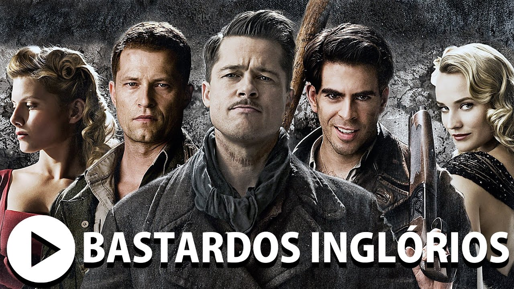

2ª Guerra Mundial. A França está ocupada pelos nazistas. O tenente Aldo Raine (Brad Pitt) é o encarregado de reunir um pelotão de soldados de origem judaica, com o objetivo de realizar uma missão suicida contra os alemães.
O objetivo é matar o maior número possível de nazistas, da forma mais cruel possível. Paralelamente Shosanna Dreyfuss (Mélanie Laurent) assiste a execução de sua família pelas mãos do coronel Hans Landa (Christoph Waltz), o que faz com que fuja para Paris. Lá ela se disfarça como operadora e dona de um cinema local, enquanto planeja um meio de se vingar.
